Real-time weed detection camera
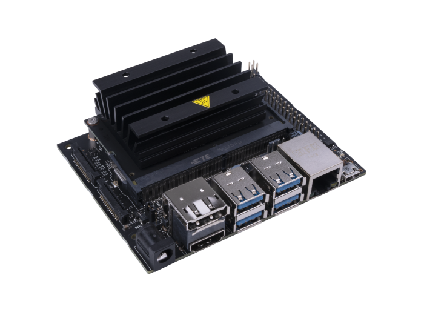
This project is focused on creating real-time weed-escape detection system. The system would contain two main components: a) real-time weed detection
camera for weed-escape detection and b) near real-time data visualization and retrieval web-interface.
PhD-Dissertation Projects (6)
Synthetic images for weed detection
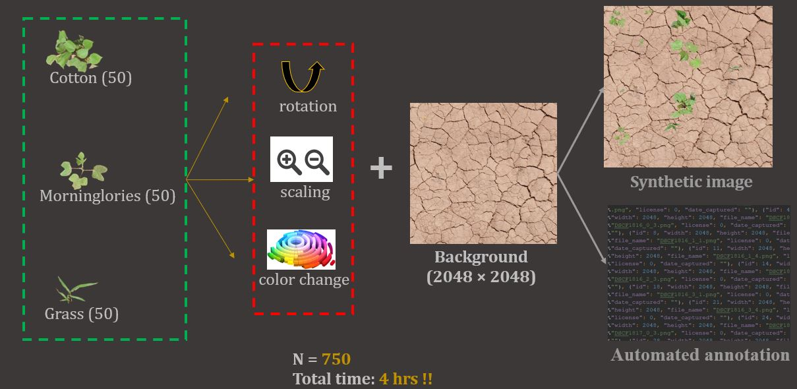
This project is focused on creating synthetic images via different strategies and evaluating their
potential in developing accurate weed detection models. The results showed that synthetic images have tremendous potential to develop comparable weed detect
ion models
Cross-applicability of detection models
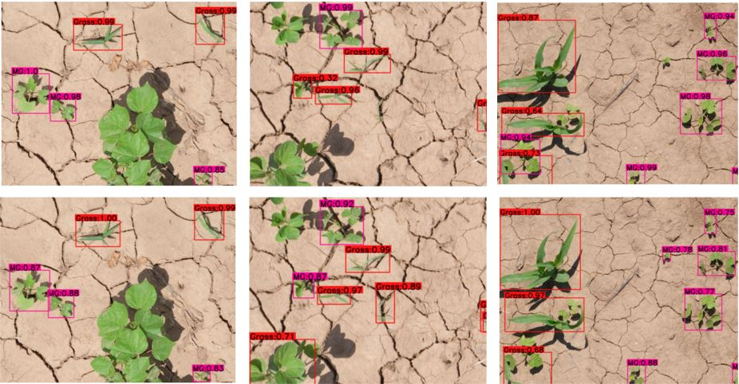
This project is focused on evaluating the performance of a deep learning-based weed detection model trained on one crop over other crops.
The results showed that the deep learning-based models can be applied across various crops, given same weed species composition.

Prediction of weed-crop competitions
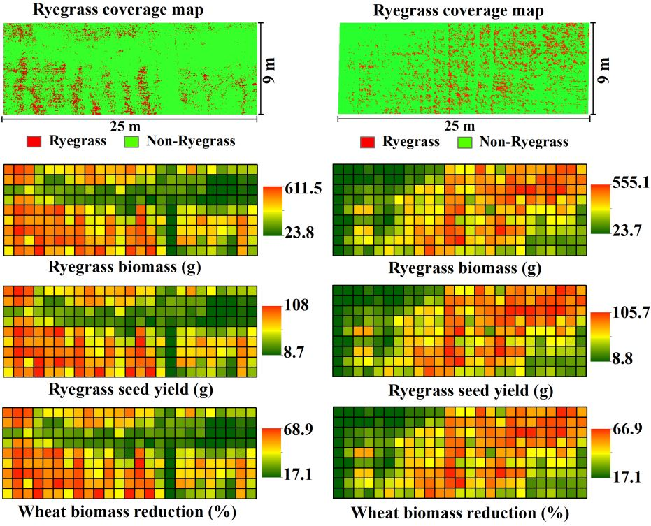
This project is focused on detecting Italian Ryegrass in wheat fields and using the detection results to evaluate the compe
titive interactions between ryegrass and wheat. The methodology demonstrated here successfully detected italian ryegrass and evaluted competitive interactions
Estimation of weed coverage using UAV
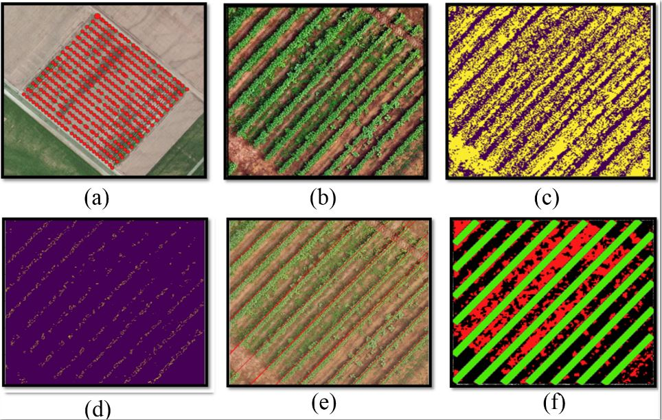
This project was focused on testing UAV-borne RGB images and crop row detection algorithms to estimate the weed coverage in cotton field. The results showed that cotton rows can be detected accurately and the weed canopy coverage area can be a great estimator of weed density.
Herbicide drift assessment using AI
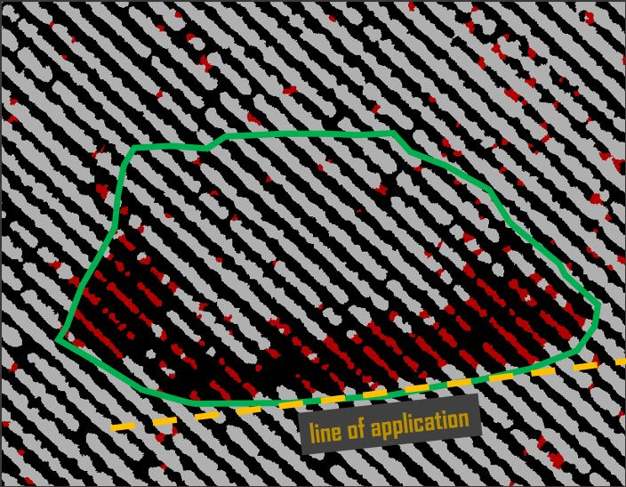
This project was focused on utilizing UAV-based Multispectral imagery and artifical intelligence models
to detect and estimate herbicide drifts from multiple herbicide products. The results showed that AI model can detect drift and estimate the drift
impact pretty precisely.
Image quality on weed detection
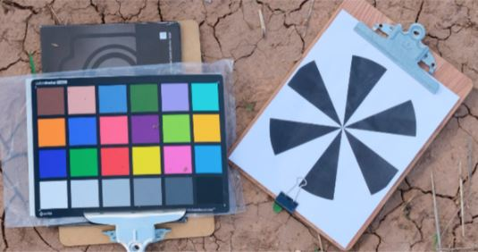
The project was focused on investigating the influence of image quality and light inconsistancy on the performance by deep learning models for
weed detection. The results showed that image quality and light inconsistancy significantly influences the detection ability
PhD - Side Projects (9)
Weed seed-rain estimation using UAV
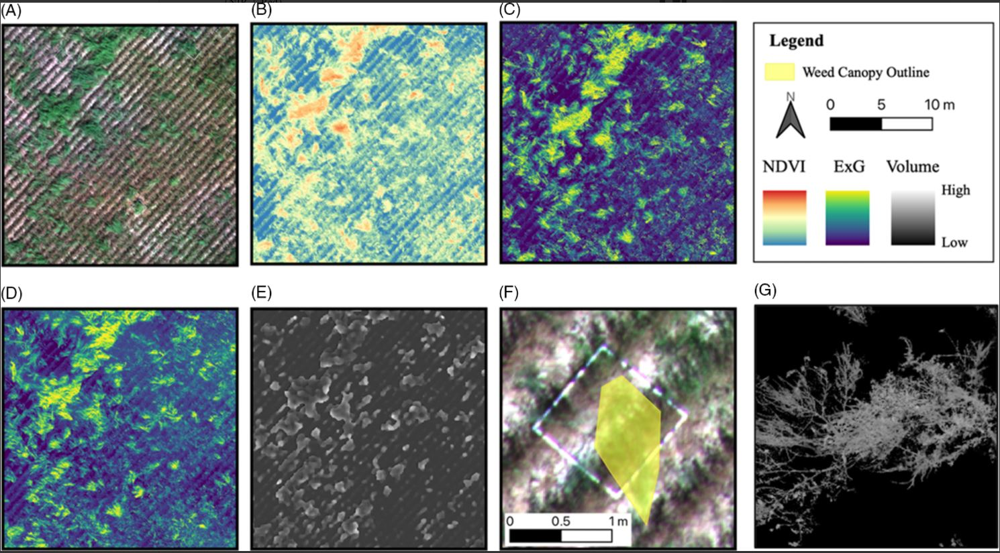
This project was carried out to evaluate the potential of UAV-borne RGB and multispectral images in estimating weed seed-rain potential from pigweeds and johnsongrass.
The results showed weed seed-rain potential can be estimated with confidence with UAV imagery
RPAAS under varying field conditions
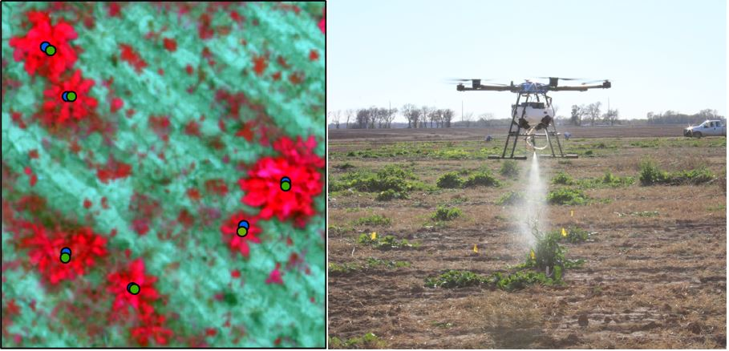
This project was focused on testing image analysis-guided spot spray application using Remote Pilot Aerial Application Systems under various weed escape
conditions. The result showed the image analysis-guided application were just as robust as manual GPS-guided applications.
Late-season weed management in Rice
 This project was focused on evaluating image analysis-guided weed escape control tactics in rice using RPAAS. The
results showed that weed escapes in rice can be detected pretty accurately and the detection results can be reliably used for site-specific weed management.
This project was focused on evaluating image analysis-guided weed escape control tactics in rice using RPAAS. The
results showed that weed escapes in rice can be detected pretty accurately and the detection results can be reliably used for site-specific weed management.
Precision control of waterhemp in Cotton
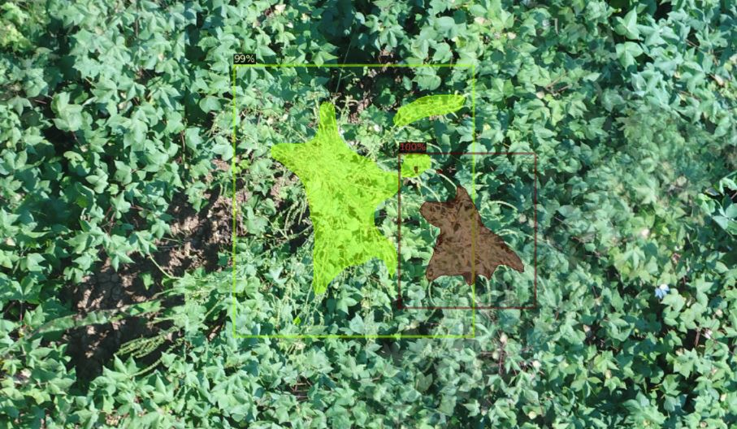
This project was focused on evaluating image analysis-guided waterhemp escape control tactics in cotton using RPAAS. The results
showed that deep learning method is able to detect waterhemp in cotton and such detection results can be reliably used for spot spray using RPAAS.
Site-specific weed management in turf
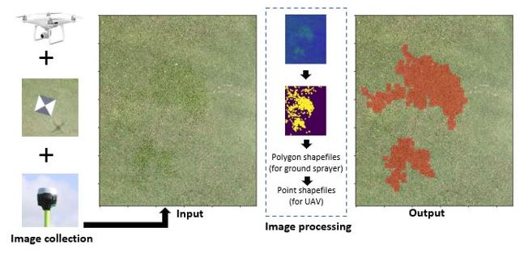
This project was focused on assessing image analysis-guided grass weed control tactics in turfgrass. The results showed that weed patches can be
reliably detected using computer vision methods and such results can be further used for spot spray using RPAAS.
Herbicide injury prediction using UAV
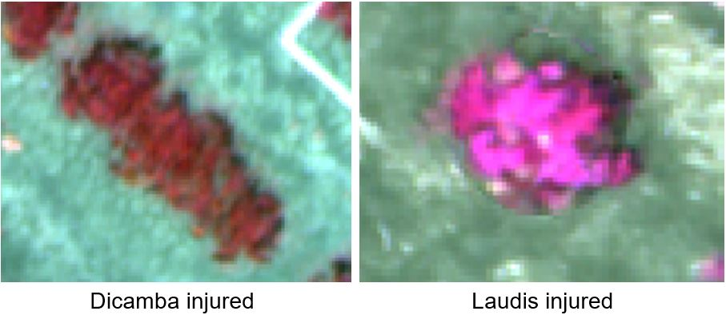
This project is focused on developing UAV imagery-based system to classify the herbicide drift injury in cotton. The preliminary
results show that multispectral imagery bear potential to provide separability between glyphosate and tembotrione herbicides.
An interactive app for injury prediction
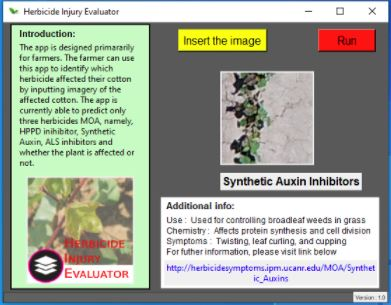
" > This project is focused on developing an graphical user interface that user can use to identify the herbicides causing the injury
based on input images. The preliminary testing of the GUI shows that herbicide can be identified based on crop injury in the images.
Spectral signtaure for weed recognition
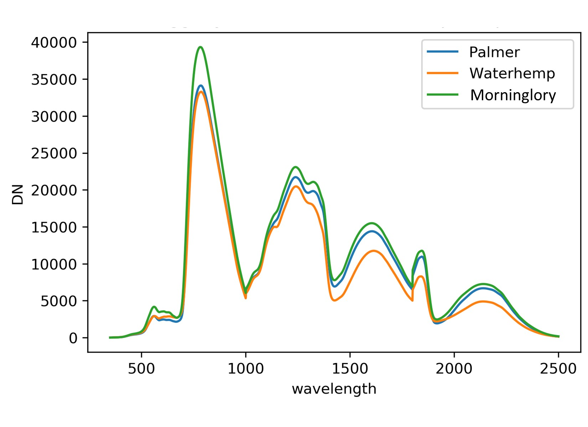
This project is focused on documenting the spectral signatures from morphologically similar crop-weed species and identifying the
bands that provide better separability. The preliminary results shows that these crop-weed group exhibit unique spectral signatures.
A Web-app for cotton yield prediction
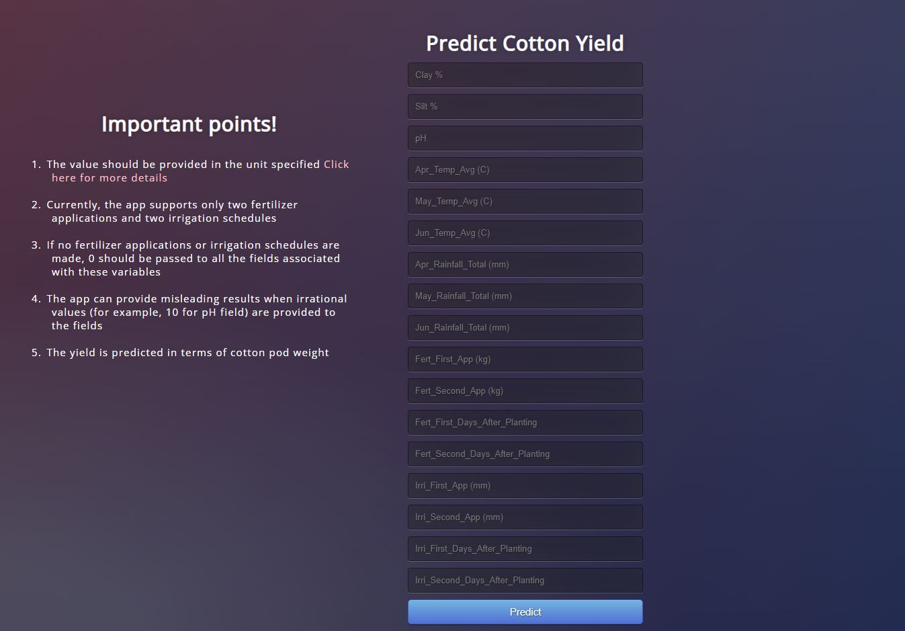
This project was focused on creating a web-app that predicts cotton yield when provided parameters related to nitrogen,
irrigation amount and schedules. The prediction model employed in web-app was developed using DSSAT simulated results and neural networks
PhD-Class Projects (3)
Hurricane Irma damage assessment
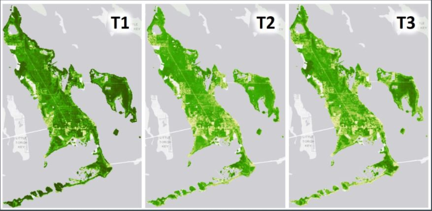
This project was focused on assessing the vegetation damage in Florida everglades caused by hurricane Irma using Landsat satellite imageries. The project
was successfully able to quantify the impacts and provide the spatial reference to the affected areas.
ML approaches for injury estimation
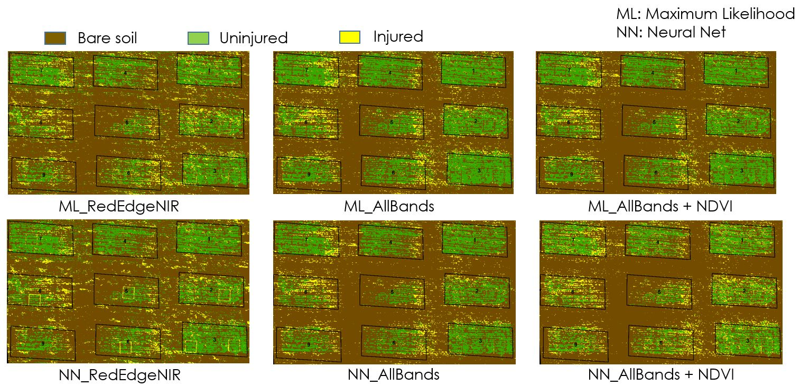
This project was focused on comparing two approaches in detecting and estimating drift injury in plants using UAV-based
multispectral imagery. The results showed that machine learning can be better approach than very popular NDVI approach for injury estimation.
Leaf-less vegetation identification
 This project was focused on mapping leaf-less vegetation bottomland hardwoods for forest management interventions using
satellite imagery and machine learning approaches. The results show that Decision Tree approach resulted in accurate maps compared to nearest neighborhood.
This project was focused on mapping leaf-less vegetation bottomland hardwoods for forest management interventions using
satellite imagery and machine learning approaches. The results show that Decision Tree approach resulted in accurate maps compared to nearest neighborhood.
M.S. Projects (3)
Insect infested tree species mapping
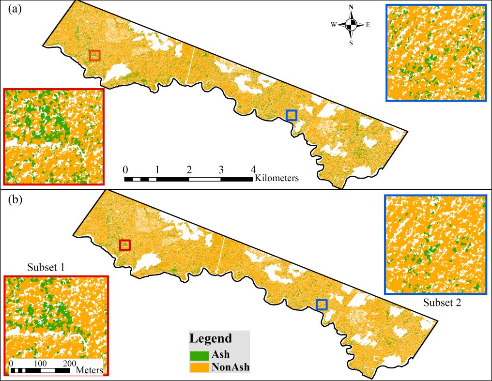
This project was focused on mapping emerald ash borer infested ash trees in a very dense bottomland hardwoods for
estabilishing quarantine zones for better insect control. The results show that textural in addition to spectral features at canopy level can provide better mapping.
Rice-field mapping with GEE
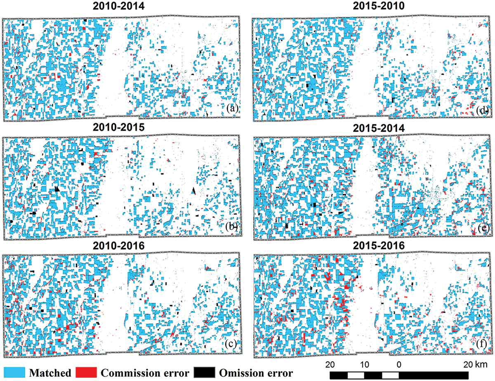
This project was focused on automating the rice field mapping using google earth engine and pseudo training samples.
The project successfully mapped rice field in Mississippi Delta Region. The method demonstrated in this project has great prospects in regard to efficient information
retrieval.
GUI for green-coverage estimation
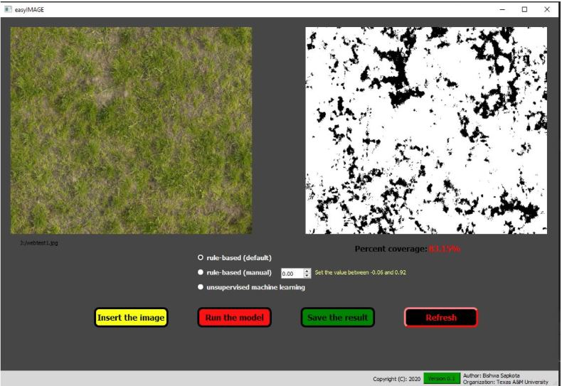
This project was purely guided by the motivation to help turfgrass researcher to conduct objective evaluation of turfgrass health. The app
analyzes images and estimates % green cover which researcher can use to evalute turfgrass health. This app can process images in batch mode.
Voluntary Projects
Automatic weed seed/pollen count
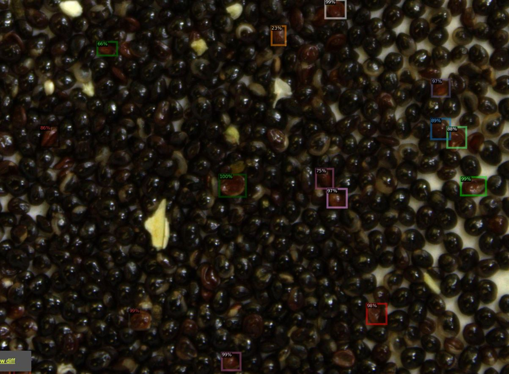
This project was focused on developing a model that could count weed seeds using digital images and perform pollen counts using microscopic pollen
images. The model also could classify viable vs non-viable seeds using deep learning algorithms.
A Web-interface for geo-locating trees
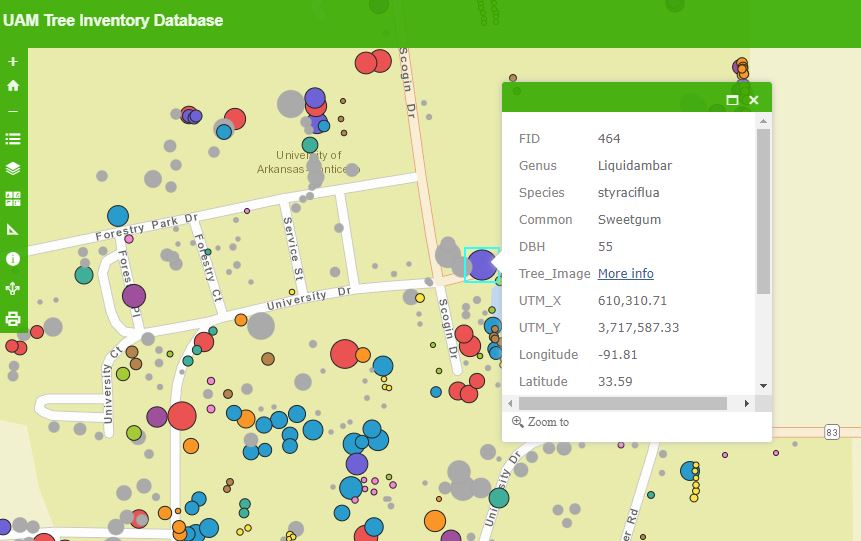
This project was focused on creating the web-interface for interactive tree species geo-locations around University of Arkansas at Monticello. The interactive map is able to
show the spatial distributions of the species along with the metadata such as tree height, diameter, and additional info.